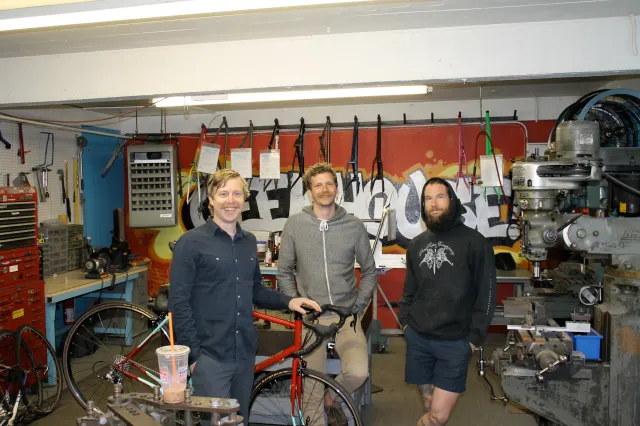
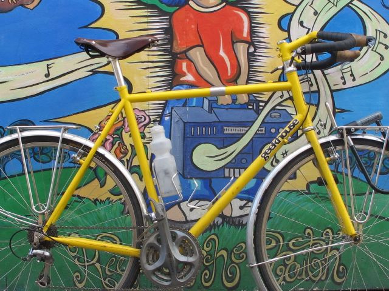

White Mountains ATB Tour
Took my new bike for a walk - 3 days of riding, hiking, and camping in the White Mountain National Forest
A rolling archive / MA · NH · Elsewhere
Rides worth remembering, bicycles worth fixing, and the things you notice when you spend a lot of time on two wheels.
This page serves as a portfolio of my experience and expertise with bicycles and bicycling.
I'm interested in the bikes more than the riders. I love gear and creative products that solve real problems.
I record my riding intermittently with Ride with GPS. I prefer it to Strava, but I also have a Strava account to keep up with friends around the world.
A few trips, long days, short detours, and places reached by bicycle.
Took my new bike for a walk - 3 days of riding, hiking, and camping in the White Mountain National Forest
Gotta get back out to Thomas next year!
Four reels from the ride shot on the CS8. Watch them here or open them directly on Instagram.
From 2009 to 2011, I worked in an office management and entry-level
marketing role at Geekhouse Bikes. We sold about 100 bicycles a year,
all custom designed and fabricated in Boston—including machining,
welding, and in-house powder coating. I really enjoyed doing the
newsletters, Flickr, early-Instagram and working on the CX Team and
going to NAHBS.
Dan St. Germain was doing very creative things
online then and it was cool to watch over his shoulder. I also got to
meet Aaron Panone and the Fringe community through my time at
Geekhouse.
Geekhouse is no longer around as a business, but The Radavist's Geekhouse archive documented our glory days best.

In 2010, I rode more than 4,000 miles with my friend Bianca, from Boston to San Francisco—against the wind. We raised more than $5,000 for the Autism Society of America, inspired by my mom's 30 years of work in pediatric nursing.
Read our cross-country trip journal →

In February 2018, I joined Jordan Load in the Hot Tubes Paint booth at NAHBS. I made a few contributions in addition to talking a lot. Jordan and I go way back, and I was honored to help curate the booth.
From 2012 to 2015, I raced three seasons of super-noob cyclocross and absolutely loved it. My favorite part was documenting it on 35mm film.
See The Drifters on Instagram →
I was featured in the Boston Globe in its piece about winter cycling. The article was published in January 2014.
Read the Boston Globe article →
Individual pages for the bikes, their builds, and their stories.

Photos, build details, and the story behind the bike.
Explore this bicycle →Photos, build details, and the story behind the bike.
Explore this bicycle →Photos, build details, and the story behind the bike.
Explore this bicycle →Frame details and photographs from NAHBS 2018.
Explore this bicycle →Photos, build details, and the story behind the bike.
Explore this bicycle →Photos, build details, and the story behind the bike.
Explore this bicycle →Photos, build details, and the story behind the bike.
Explore this bicycle →The Ultra Short Tandem, purchased from Mike Flanigan.
Explore this bicycle →